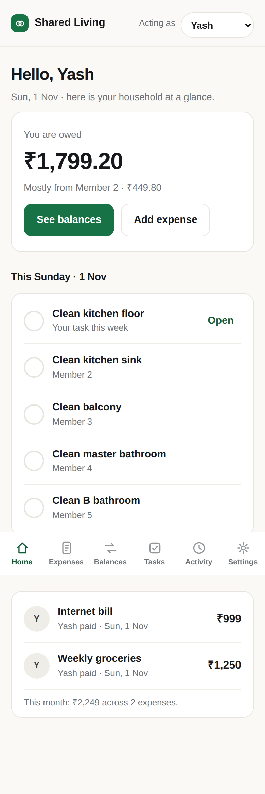

RoomSync / Shared Living
A shared-living management concept designed to simplify expense splitting, household responsibilities and coordination between flatmates.

Live PWAIdeaA flat needs one trusted record for money and chores: who paid, who owes whom, and whose turn it is to clean.
How it worksEqual, exact, weighted and percentage splits in paise, simplified balances, settlements only the recipient confirms, and weekly plus one-time tasks with a deterministic rotation. 77 automated tests cover splits, balances and tasks.
StatusLive as a progressive web app, in pilot use in one flat. No user counts or usage claims are made here.